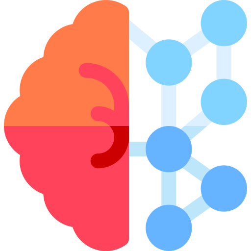
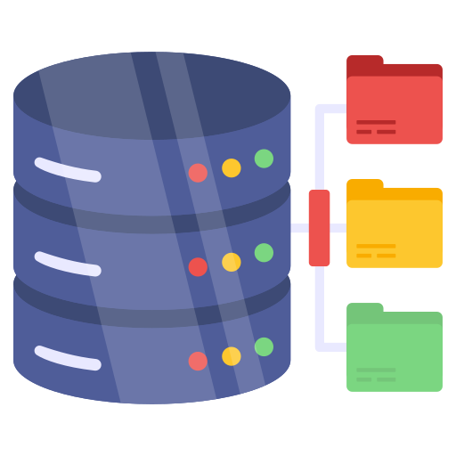
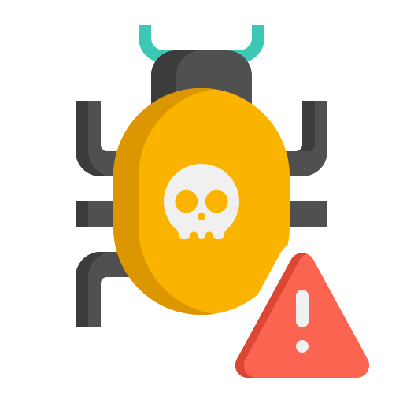
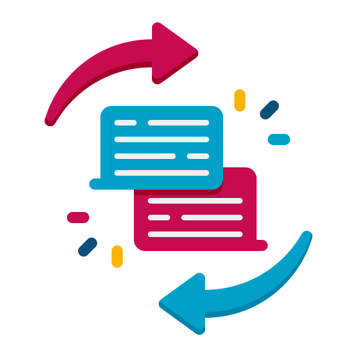

Luiz H. Consolmagno

Senior Software Engineer | DevOps Engineer | Senior Full-Stack Developer

About Me
I am a software engineer passionate about automation, security, and innovation, with over 20 years of experience in developing software systems for industrial and operational environments. Throughout my career, I have specialized in creating and managing advanced security, automation, and control systems for sectors such as mining, tunnel construction, and industrial automation. My experience ranges from developing solutions with Programmable Logic Controllers (PLCs) like Omron, Schneider, and Controllino, to creating complex systems using Python, PHP, C, and modern automation tools.
With a proven track record in technical design, software development, DevOps, CI/CD pipelines, industrial infrastructure automation, and home automation, I am dedicated to improving processes and optimizing software delivery. I have worked on integrating security systems, such as Hikvision and Blueup, as well as leading the implementation of access control technologies and real-time monitoring, always focusing on ensuring efficient, secure, and easy-to-manage systems.
I have a results-driven approach and a strong ability to solve complex problems, which allows me to deliver innovative, high-impact solutions. I believe true innovation comes from collaboration between development and operations teams, and my passion for continuous learning drives my growth, enabling me to tackle new challenges and adapt cutting-edge technological solutions.
With over 30 km of fully automated tunnel galleries under my leadership, I have hands-on experience managing robotics, gallery automation, security system integration, and automatic alerts to authorities. I am always seeking new ways to apply my expertise to create safer, more efficient, and technologically advanced environments.
This all to deliver meaningful products as well as a high quality code.

Education
- Computer Information System - KASIT, University of Jordan (09/2017 - 05/2020) - GPA (3.5)
- Physics and Mechanical Engineering - University of Jordan (09/2015 - 05/2017) - GPA (3.0)

E-learnign
- Computer Information System - KASIT, University of Jordan (09/2017 - 05/2020) - GPA (3.5)
- Physics and Mechanical Engineering - University of Jordan (09/2015 - 05/2017) - GPA (3.0)

Work Experience
Software Engineer | Security Systems, Automation and Robotics Control
Green Solutions srl | Gruppo VGS · Full-timeGreen Solutions srl | Gruppo VGS · Full-time
Sep 2024 - Present
Trecchina, Basilicata, Italy · HybridTrecchina, Basilicata, Italy · Hybrid
A highly skilled Software Engineer with expertise in developing and managing advanced security and automation systems for tunnel environments, mining operations, and industrial sectors. Proficient in programming for Programmable Logic Controllers (PLC) such as Controllino, Omron, and Schneider, alongside strong experience in Python, PHP, and C programming. Specializing in the design, implementation, and maintenance of tunnel safety systems, including gas, fire, and flood alarms, as well as advanced worker safety features such as real-time tracking and access control. Adept at creating intuitive user interfaces for workers and automating alerts to authorities, alongside managing fully automated tunnel gallery construction systems, spanning over 30 km of tunnels.
Experienced in integrating security systems like Hikvision for surveillance, as well as managing access control using TAG and BADGE systems from Blueup and Trexon. Demonstrated expertise in software project management, including documentation, implementation, and ensuring seamless integration between servers and automation systems. Skilled in managing internal servers within tunnel galleries, overseeing the cabling for cameras and fiber optics, and optimizing the performance of robotic devices and automation equipment. Proficient in API integration, JSON handling, and the use of Linux servers in a GNU/Linux environment to enhance and support the overall functionality of automated systems across diverse industrial sectors.
Skills: SQL · Teamwork · Software Documentation · Web Project Management · Software Industry · Automation · Debugging · Bash · MongoDB · Linux Server · English · Schneider · PHP · Software Project Management · Java · Linux · Building Automation Systems (BAS) · Ubuntu · PLC Programming · MySQL · Italiano · hikvision · JSON · Symfony Framework · Programmable Logic Controller (PLC) · Software Development · GNU/Linux · Git · Resolução de problemas · Flask · Microsoft Visual Studio · C (Programming Language) · Front-End Development
Software Programmer | Business Automation Specialist | Sales and Manufacturing Process Optimization
SIRMEC s.r.l. · ContractSIRMEC s.r.l. · Contract
Jan 2024 - Jul 2024
Senise, Basilicata, Italy · On-site
Focused on automating key resources within the company, specializing in the automatic management of sales, information processing, and optimizing communication between the sales and manufacturing departments. The role has contributed to increased efficiency in the manufacturing flow and a significant boost in daily deliveries. A custom software solution was developed in Java, utilizing MySQL on a Linux CentOS environment in a local infrastructure, ensuring seamless integration and improved operational performance.
Skills: SQL · Teamwork · Software Documentation · Web Project Management · Software Industry · Automation · Debugging · Bash · Application Programming Interfaces (API) · Linux Server · eBay Sales · English · Web Development · Software Project Management · Java · Linux · Ubuntu · Software Development Life Cycle (SDLC) · eBay API · MySQL · Italiano · Software Infrastructure · JSON · Eclipse · Software Development · Spring Boot · GNU/Linux · Git · Resolução de problemas · Spring Framework · Microsoft Visual Studio · Front-End Development
Software Developer | Home and Industrial Automation
Vemar · Full-timeVemar · Full-time
Mar 2023 - Dec 2023
Paterno, Basilicata, Italy · Hybrid
Experienced software developer with expertise in home and industrial automation systems, specializing in creating integrated solutions for smart homes and industrial environments. Proficient in programming languages such as Python, Ruby, and PHP, with hands-on experience in developing automation systems using platforms like Raspberry Pi, Arduino, and Linux-based environments (Ubuntu, Linux Headless). Skilled in implementing and debugging solutions with tools like Git, Microsoft Visual Studio, and Flask, focusing on building seamless communication between devices such as Sonoff, Z-Wave, Shelly, Tapo, Philips, Samsung, and Alexa-enabled products. Adept at utilizing automation protocols and technologies like Building Automation Systems (BAS), Bash scripting, and MongoDB for efficient data handling. Strong knowledge in integrating various smart devices, including Amazon Fire Stick, into automated workflows. Passionate about leveraging advanced technologies to improve operational efficiency and enhance user experience in both home and industrial settings.
Skills: SQL · Teamwork · Software Documentation · Web Project Management · Automation · Debugging · Python (Programming Language) · Bash · MongoDB · Linux Server · scss · English · PHP · Linux · Building Automation Systems (BAS) · Ubuntu · Italiano · JSON · Programmable Logic Controller (PLC) · Ruby · Software Development · Home Automation · GNU/Linux · Ruby on Rails · Git · Resolução de problemas · Flask · Microsoft Visual Studio · Front-End Development
Software Developer | Game Developer Mobile - PC Games
NewLand Games · Full-timeNewLand Games · Full-time
Mar 2004 - Dec 2019
Netherlands · On-site
Software Developer
From the early years of my career, I was fortunate to embark on this path thanks to my mentor, who allowed me to learn extensively and gain vast experience in software development and web services. I have acquired skills in usability structure design, database management, and development environments (IDE) for programming.
Thanks to this experience, we have worked in various countries, from America to Europe, with the constant goal of learning, innovating, and creating increasingly efficient systems.
I work with various programming languages, including C, C#, PHP, Python, Java, and JavaScript, along with their respective frameworks for developing modern and efficient applications:
C: Qt, GTK, Poco, Cello
C#: .NET Core, ASP.NET, Unity, MonoGame
PHP: Laravel, Symfony, CodeIgniter, Phalcon
Python: Flask, Django, FastAPI, Tornado
Java: Spring Boot, Quarkus, Jakarta EE, Micronaut
JavaScript: React, Angular, Vue.js, Svelte
This combination of skills allows me to develop scalable, high-performance, and innovative solutions across various contexts, from desktop and web application development to the creation of complex and distributed systems.
Game Developer
Experienced in developing mobile, PC, and web-based games. Proficient in programming languages such as C and HTML5, with expertise in tools like Microsoft Visual Studio, Git, and MySQL for software development and version control.
Skilled in designing game interfaces and assets, utilizing Adobe Photoshop, SCSS, and CSS, with a strong focus on problem-solving and performance optimization across multiple platforms. In-depth knowledge of game design principles, web development, and Linux-based systems, particularly Ubuntu.
Strong English communication skills and a deep passion for creating interactive, high-quality gaming experiences for both mobile and PC platforms.
Skills: SQL · Teamwork · Software Documentation · Spanish · Debugging · Linux Server · scss · English · Illustration · Web Development · Software Project Management · Cascading Style Sheets (CSS) · Linux · Ubuntu · HTML5 · MySQL · Game Development · JSON · Symfony Framework · Mobile Games · Software Development · Adobe Photoshop · Web design · GNU/Linux · Git · Resolução de problemas · Microsoft Visual Studio · C (Programming Language) · Front-End Development
Art Director | Graphic Design, Digital & Print Quality Management, Website Creation
EuroGrafica · Full-timeEuroGrafica · Full-time
Dec 2012 - Jul 2017
Porto, Portugal
Experienced Art Director with expertise in both digital and print media quality management, as well as the design and development of visually stunning websites. Specializing in creating websites with 2D and 3D animations, illustrations, and interactive elements, including e-commerce platforms and other dynamic web experiences. Proficient in industry-leading tools like Adobe Photoshop, Illustrator, After Effects, and Krita for crafting engaging graphics and animations, along with web technologies such as HTML5, CSS, PHP, and WordPress for seamless site development. Regularly liaises with clients to ensure creative visions align with deliverables, leading meetings for design reviews and feedback. Involved in the research and development of new campaigns, contributing innovative ideas for brand strategy and digital presence. Adept at managing and mentoring teams, optimizing workflows, and providing problem-solving solutions to ensure smooth project execution from concept to delivery. Committed to delivering high-quality work that enhances user experience and elevates brand identity.
Skills: SQL · Graphic Design · Teamwork · Spanish · English · Illustration · Krita · PHP · Web Development · Cascading Style Sheets (CSS) · Linux · Adobe Illustrator · HTML5 · MySQL · Português · Drawing · Symfony Framework · Adobe After Effects · Software Development · Adobe Photoshop · Web design · GNU/Linux · Git · Resolução de problemas · Microsoft Visual Studio · Front-End Development · WordPress
Graphic Designer | Visual Identity, Web Design, and Branding
Elf Illustrator · Full-timeElf Illustrator · Full-time
Feb 2010 - Jun 2012
São Paulo, Brazil
Creative Graphic Designer with extensive experience in visual identity, branding, and web design. Skilled in using industry-standard tools such as Adobe Photoshop, Illustrator, After Effects, InDesign, and typography to craft engaging, high-quality designs. Specializes in creating compelling logos, print materials, and digital assets that align with client needs and brand identity. Adept at designing user-friendly websites, ensuring seamless integration of visual elements to enhance user experience. Strong expertise in illustration, motion graphics, and typography to create dynamic content for both digital and print media. Fluent in both English and Portuguese, with a proven ability to collaborate with clients to translate their ideas into effective design solutions. Passionate about delivering designs that resonate with audiences and elevate brand recognition.
Skills: SQL · Graphic Design · Teamwork · Spanish · Logo Design · English · Illustration · Web Development · Linux · Adobe Illustrator · MySQL · Português · Adobe After Effects · Typography · Adobe Photoshop · GNU/Linux · adobe InDesigner · Microsoft Visual Studio · Front-End Development · Web Design
Graphic Designer | Branding, Web Design, and Visual Communication
Phoenix · Full-timePhoenix · Full-time
Apr 2007 - Aug 2009
Phoenix, Arizona, United States
Emerging Graphic Designer with a strong passion for branding, web design, and visual communication. Skilled in using Adobe Photoshop, Illustrator, After Effects, InDesign, and typography to create visually appealing and functional designs. While still early in my career, I have experience in designing logos, digital content, and websites that capture the essence of a brand and engage its audience. Eager to apply my knowledge in illustration, motion graphics, and typography to create meaningful, creative designs for both digital and print media. Fluent in English and Portuguese, with a collaborative mindset and a drive to learn and grow in the design field.
Skills: SQL · Graphic Design · Teamwork · English · Illustration · Web Development · Linux · Adobe Illustrator · MySQL · Adobe Photoshop · GNU/Linux · adobe InDesigner · Microsoft Visual Studio · Front-End Development

Projects

- Home and Industrial Automation
- Stock and Reatil System

- Automation of System, Industrial Stock and Shipping Automation

- CheckTime health tracker Android application

Events and Proticipations
- 1st Place in JU Flash Programming Contest
- 5th Place in JUUPC 2019 - University of Jordan Programming Contest
- 10th Place JUUPC 2018 - University of Jordan Programming Contest
- 2nd Place in OMO Olympiad of Mathematics 2012
- Participation in IEEEXTREME 2018
- Participation in JCPC 2017, 2018, 2019.
- Participation in Google Hash Code 2017
- Participation in Code Chef Programming Contest
- Participation in AMMANPC 2018
- Participation in CTF (Cyber Talents) 2019
- 4th Place in Amman Private Schools Chess Competition 2010

Programming Language

- HTML

- CSS

- C

- SQL and NoSQL

- Python

- Java

- C++

- Node.js

- Flutter
.png)
- React

- Git

- Docker

- C#

- Linux

- Bash
Technical Skills

- Data Structures and Algorithms

- Operating Systems
- Computer Networks
- Databases (SQL and NoSQL)

- Software Architecture

- Software Design Patterns

- Test-Driven Development (TDD) and Behavior-Driven Development (BDD)

- Continuous Integration and Continuous Deployment (CI/CD)

- Cloud Computing (AWS, Azure, GCP)

- Information Security
- System Scalability and Performance

- Agile Methodologies (Scrum, Kanban)

- DevOps and Infrastructure Automation

- APIs and Communication Protocols (REST, gRPC, GraphQL)

- System Monitoring and Observability

Analytical and Problem-Solving Skills

- Programming Logic
- Critical Thinking

- Complex Problem Solving

- Data-Driven Decision Making
- Debugging and Error Diagnosis

Collaboration and Communication Skills

- Teamwork

- Technical Documentation
- Clear and Concise Communication

- Ability to Explain Technical Concepts to Non-Technical Audiences
- Constructive Feedback
- Conflict Management

Management and Organizational Skills

- Time Management and Prioritization

- Self-Management and Proactiveness

- Continuous Learning and Adaptability

- Project Management (PMBOK, Agile, Lean, etc.)

- Decision-Making in High-Pressure Environments
- Systemic and Strategic Vision

User Experience (UX) Skills

- User Experience (UX) Skills

- Digital Accessibility

- Usability and Human-Computer Interaction (HCI)

Lang's

- Portogues (Mother lang)

- Italian C2

- Espanol C1
- English B2

- Deutchen A2